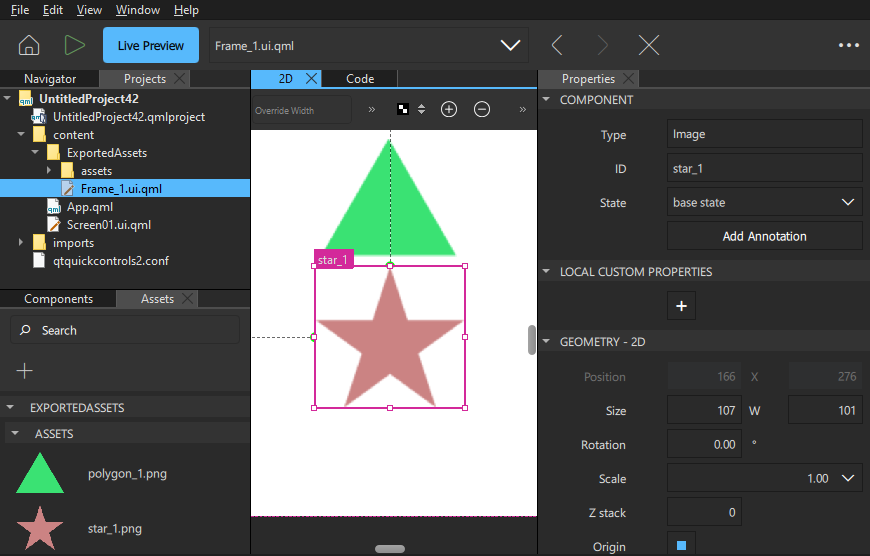
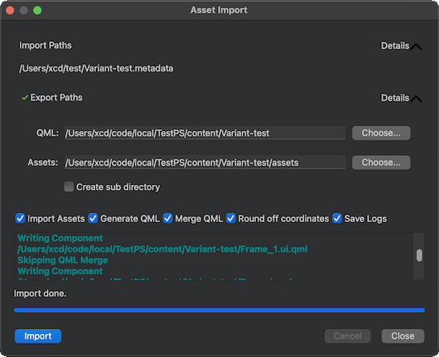

Importing 2D Assets
You can import 2D assets, such as images, fonts, and sound files, to Qt Design Studio to use them in your projects.
To import an asset, drag-and-drop the external file containing the asset from, for example, File Explorer on Windows, to the 2D, Navigator, or Code view. Alternatively, select Assets >  and follow the instructions in the Asset Import dialog. You can also multiselect several external asset files to drag-and-drop them to Qt Design Studio simultaneously.
and follow the instructions in the Asset Import dialog. You can also multiselect several external asset files to drag-and-drop them to Qt Design Studio simultaneously.
The imported images will appear in Assets. If you initiate the import by dragging the assets to the 2D view, they are also added to your projects as image components, and you can view them in the 2D and Navigator view. If you drag an external font file to the 2D view, it will be added to your project as a text component. Other imported assets, such as sound files, will only appear in Assets, and you can then drag-and-drop them to a suitable view.
Importing Designs From Other Design Tools

Qt Bridge enables you to export assets and then import them to a Qt Design Studio project as images and QML files for editing in the 2D view. If you make changes to your design in the design tool that you originally used to create it, you can merge the changes into existing QML files without overwriting the changes you have made in Qt Design Studio. For more information, see Exporting from Design Tools.
Qt Bridge exports the designs either as an archive(.qtbridge) or as images with a .metadata file. Qt Design Studio support both formats.
The following instructions use an empty project as an example. For more information about the options you have, see Creating Projects.
To import the exported assets to Qt Design Studio projects:
- Select File > New Project > General > Empty. Add Details about the project and select Create.
- In Projects, double-click Screen01.ui.qml to move to the Design mode.
- Select Assets > .
- Select the folder where you exported the assets.
- Select Compressed Metadata (*.qtbridge) or Exported Metadata (*.metadata) in the dropdown menu to filter the exported files.
- Select a the file to import and then select Open.
- Select Details next to the Import Paths field to display the path where the exported assets are imported from.

- Select Details next to the Export Paths field to display the paths to copy the assets to.
- In the QML field, you can change the folder to copy the QML files to.
- In the Assets field, you can change the folder to copy the image files to.
- Select the Create sub directory check box to import the assets in a sub directory inside Export Paths.
- Deselect the Import assets check box if you only want to create QML files.
- Deselect the Generate QML check box if you only want to import assets.
- Select the Merge QML check box if you have imported the assets before and want to merge the changes into existing QML files instead of overwriting the existing files. See Merging QML Files.
- Select the Round off coordinates check box to round off the position and dimension values to integers in the generated QML files.
- Select the Save Logs check box to write the export logs to a text file inside the directory selected in QML export path.
- Select Import to import the QML files and assets. This might take a little while for complex projects.
The imported assets are displayed in Assets as images. The components that you specified in the design tool are displayed in Components > My Components as well as in the Projects view as separate QML files. To use them, drag-and-drop them from Components to the 2D or Navigator view.
If asset importer conflicts, warnings, and errors are displayed in the Asset Import dialog while importing, fix the issues in design tool and export the assets again.
Merging QML Files
When you re-import a QML component, the changes done in Qt Design Studio are preserved. The QML item changes in the existing QML component are copied to the corresponding QML item in the new component.
The following rules are observed while merging QML components.
- While importing, a unique identifier (UUID) is added for each QML item in the component. The UUID is used to find the corresponding QML item in the existing component.
- New item properties in the existing component are added to the corresponding item in the new component.
- When a QML property is set in both old and new QML item, the property in the new item remains unchanged. This rule does not apply to binding properties. In case of bindings, changes done in Qt Design Studio are preserved.
- New child items are added to the corresponding item in the new component.
- QML items for which a corresponding QML item is not found in the existing component, are added under the root item of the new component.
Qt Bridge for Sketch Tutorials
For more information, read the tutorials about using Qt Bridge for Sketch that are also accessible from the Tutorials tab of the Welcome mode: